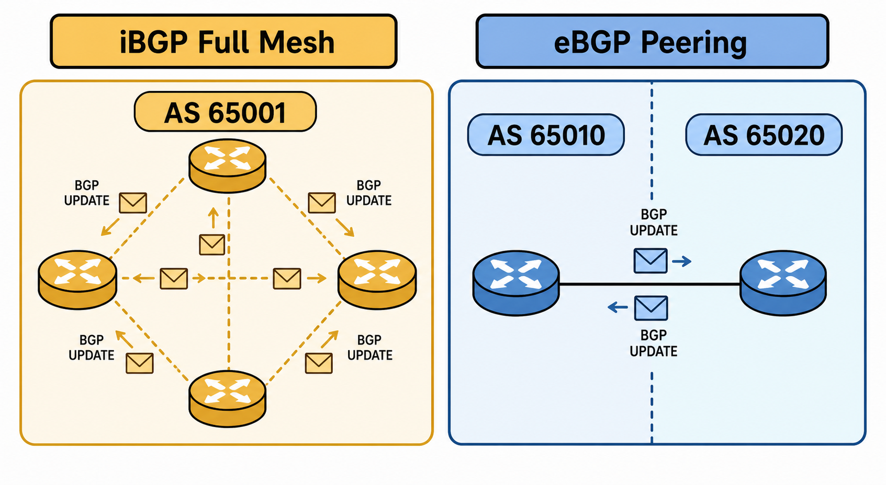

Overview
BGP (Border Gateway Protocol) is a path-vector routing protocol and the only EGP (Exterior Gateway Protocol) in widespread use today. Unlike OSPF, which builds a topology map and computes shortest paths, BGP exchanges reachability information annotated with attributes — and makes routing decisions based on policy applied to those attributes. BGP is designed to interconnect separate administrative domains called Autonomous Systems (ASes). Each AS is assigned a unique AS number (ASN) — public ASNs are assigned by IANA/RIRs for internet-facing use, while private ASNs (64512–65534 for 16-bit, 4200000000–4294967294 for 32-bit) are used internally. BGP runs over TCP on port 179, which means it relies on IP reachability before a session can form.
BGP exists in two forms. eBGP (external BGP) runs between routers in different ASes — this is how internet service providers exchange routes with each other and with customer networks. iBGP (internal BGP) runs between routers within the same AS — used when multiple BGP-speaking devices inside one AS need to share BGP-learned routes. The critical distinction is that iBGP does not modify the next-hop attribute when advertising to iBGP peers (by default), which requires that iBGP peers be able to independently resolve those next-hops — or that next-hop-self be configured. Another iBGP rule: a router will not re-advertise an iBGP-learned route to another iBGP peer (the split-horizon rule for iBGP), which requires either a full mesh of iBGP sessions between all iBGP speakers, or a route reflector architecture to avoid the full-mesh scaling problem.
On FortiGate, BGP is configured under the routing protocol section. A neighbor statement defines each BGP peer by IP address and remote AS number. Routes are injected into BGP either via a network statement (which activates a prefix if it exists in the routing table) or via redistribution from another protocol. FortiGate supports standard BGP attributes including LOCAL_PREF, MED, and AS-path manipulation through route maps, and supports both route reflector client and server configurations for iBGP scaling. Understanding the BGP finite state machine — the sequence of states a session passes through from Idle to Established — is essential for diagnosing peering failures.

iBGP full mesh vs eBGP peering diagram
Target Questions
These are the questions your Socratic session will explore. Read them before you start — they tell you what understanding to look for while reviewing the study guide.
- 1What is the fundamental difference between iBGP and eBGP — when is each used?
- 2What is an Autonomous System number and what is the difference between a public and private AS?
- 3What is the next-hop issue in iBGP and why is
next-hop-selfoften required on iBGP route reflectors? - 4What is a BGP full mesh and why is it required for iBGP — what are the alternatives to a full mesh?
- 5What is the BGP OPEN message and what parameters must match for BGP peering to establish?
- 6What are the two ways to inject routes into BGP on FortiGate (network statement vs redistribution)?
- 7What are the BGP neighbor states in order — what does each state mean?